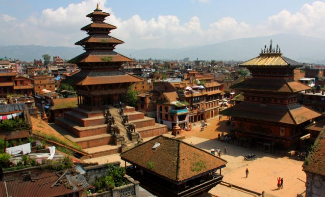

پس از دو زلزله ویرانگر در سال ۲۰۱۵، نپال با تلاشهای امدادی و بازیابی طولانی و پرهزینه مواجه شد. فعالان دادههای باز نپال به دنبال روشهایی برای جمعسپاری و استقرار دادههای باز برای شناسایی فوریترین نیازهای شهروندان، هدف قرار دادن اقدامات امدادی مؤثر و تضمین رسیدن پول کمک به افراد نیازمند بودند. تعدادی از اقدامات، نقشههای پس از زلزله را ایجاد کردند که توسط سازمانهای امدادی مورداستفاده قرار گرفتند، به نجاتدهندگان نپالیها در موردنیاز به کمک فوری هشدار دادند، فرصتهایی را برای شهروندان فراهم کردند تا بازخورد در مورد بهبود را با دولت به اشتراک بگذارند، و از طریق پورتالهای شفافیت، پاسخگویی مالی برای کمک مالی را تضمین کردند. تلاشهای دادهمحور برای آمادگی در برابر بلایا و استفاده از دانش، تخصص و ارتباطات محلی، موفقیت پروژههای دادههای باز پس از زلزله را افزایش داد. بلایای طبیعی فجایع انسانی و اقتصادی هستند که باعث هدر رفت منابع کشورها و جامعه بینالمللی میشوند. اقدامات موردبحث در این مطالعه موردی پتانسیل دادههای باز را برای اطلاعرسانی تلاشهای جمعآوری دادههای جمع سپاری، کمک به نجات جانها و مؤثرتر کردن تلاشهای امدادی نشان میدهد.
پیشینه و زمینه
تمرکز بر مسئله / زمینه کشور
نپال یک کشور زلزلهخیز است: بین سالهای ۱۹۰۰ تا ۲۰۱۱، شش زلزله جدی رخ داد که درمجموع منجر به مرگ ۱۳۵۰۰ نفر شد. در آوریل و مه ۲۰۱۵، نپال توسط یک سری زمینلرزه بزرگ که منجر به کشته شدن ۸٬۸۹۸ نفر و زخمی شدن ۲۲٬۳۰۰ نفر دیگر شد، تحت تأثیر قرار گرفت. اولین زلزله با بزرگی ۷.۸ در ۲۵ آوریل ۲۰۱۵ با مرکز زلزله در روستای Barpak، در حدود ۷۵ کیلومتری پایتخت، کاتماندو، رخ داد. هفتههای پسازآن بیش از ۳۰۰ زمینلرزه بزرگتر از ۴ ریشتر را شاهد بودیم، ازجمله دومین زلزله جدی (بزرگی ۶.۳۵) در ۱۲ می، با مرکز زلزله در نزدیکی کوه اورست.
اثر زمینلرزهها ویرانگر بود. سیویک منطقه از ۷۵ منطقه این کشور تحت تأثیر قرارگرفتهاند که از این تعداد ۱۴ منطقه بحرانزده شدهاند. تقریباً نیم میلیون خانه ویران شد، ازجمله کل روستاهای نزدیک به مرکز زلزله، و بیش از ۲۵۰٬۰۰۰ خانه دیگر نیز ویران شدند.
علاوه بر این، خسارات زیادی به ساختمانهای دولتی، مدارس، بیمارستانها، سایتهای میراث فرهنگی، زیرساختهای حملونقل و برق و زمینهای کشاورزی وارد شد. گفته میشود که تقریباً ۳.۵ میلیون نفر در اثر زلزله بیخانمان شدهاند و ۸ میلیون نفر - تقریباً یکسوم جمعیت کشور - تحت تأثیر قرار گرفتهاند. تأثیر زمینلرزهها با فقر و سطح پایین توسعه نپال تشدید شد. اگرچه نپال در کاهش نرخ فقر خود از ۶۴.۷ درصد در سال ۲۰۰۶ به ۴۴.۲ درصد در سال ۲۰۱۱ بسیار موفق بوده است، اما با سرانه تولید ناخالص داخلی ۲٬۵۷۳ دلار در سال ۲۰۱۶ یکی از فقیرترین کشورهای آسیا باقیمانده است. برنامه توسعه سازمان ملل، نپال را یک کشور با توسعه انسانی پایین میداند.
در شاخص دادههای باز جهانی ۲۰۱۵، نپال در رتبه ۶۱ از ۱۲۲ کشور با امتیاز ۳۰ درصد باز قرار دارد. بارومتر دادههای باز ۲۰۱۵ نپال را با امتیاز ۱۳.۰۹ در رتبه ۶۸ قرار داد که بسیار کمتر از میانگین جهانی ۳۲.۹۶ است. از ژانویه ۲۰۱۷، نپال به مشارکت دولتی باز (OGP) نپیوسته است، اگرچه گامهای اولیه به سمت این هدف نهایی برداشتهشدهاند. ایجاد OpenGov Hub کاتماندو در سال ۲۰۱۴، یک فضای همکاری و مشارکت برای دادههای باز، شفافیت و پاسخگویی، و سازمانها و فناوری مدنی و استارتآپها، همچنین به ادامه تکامل علاقه و استفاده از دادههای باز در آینده اشاره میکند. بااینحال، زیرساخت فنی و آمادگی نپال همچنان محدود است. بهعنوانمثال، طبق گزارش ODB، نپال به ازای هر ۱۰۰ نفر تنها ۱۵ کاربر اینترنت دارد..
ارائهدهندگان دادههای کلیدی، کاربران و واسطهها
برخلاف بسیاری از پروژههای موجود در این سری از مطالعات موردی، که در آن نقشآفرینان مختلف نقشهای متفاوتی را در زنجیره ارزش دادههای باز به عهده گرفتند، نقشآفرینان درگیر در این ابتکار خاص نقشهایی را بهعنوان جمعآورنده داده، ارائهدهنده، کاربران و واسطهها ترکیب کردند. تمرکز بر تولید دادههای جمعسپاری و استفاده از آن در کنار دادههای دولتی باز، خطوطی را که معمولاً نقشهای سنتی را در میان ذینفعان داده باز مشخص میکند، محو کرد.
با در نظر گرفتن این نکته، نقشآفرینان اصلی در پروژههای موردبررسی عبارتند از:
آزمایشگاههای زنده کاتماندو (KLL): یک شرکت فناوری شهری غیرانتفاعی که برای ایجاد فناوری با تأثیر بالا برای تغییر روش کار دولت کار میکند. Young Innovations Ltd: یک شرکت فناوری کاتماندو که در سال ۲۰۰۷ متخصص در راهحلهای توسعه تأسیس شد، هدف آنها ایجاد دادههای باز بهعنوان یکی از اولویتهای دولت نپال است. گروه مداخلات محلی: گروه مداخلات محلی (LIG) یک سازمان غیرانتفاعی است که در جنوب جهانی برای بهبود حکمرانی از طریق راهحلهای مبتنی بر داده کار میکند. این شرکت که توسط شرکتکنندگان در یک سمینار دانشجویی در مدرسه اقتصاد لندن تأسیس شد، دفاتری در بریتانیا و نپال دارد. LIG هم کاربر داده و هم ارائهدهنده است، که بهطور فعال به دنبال گسترش مجموعه دادههای باز نپال از طریق جمعسپاری و تبدیل داده استاتیک دولت به قالب قابلخواندن توسط ماشین است.Open Nepal: یک مرکز دانش و فضای یادگیری برای سازمانهای نپالی و افرادی که دادهها را برای توسعه تولید میکنند، به اشتراک میگذارند و استفاده میکنند. این پلتفرم متعلق به نوآوریهای جوان، فدراسیون سازمانهای غیردولتی نپال، انجمن آزادی و اقدامات توسعه است و هدف آن گرد هم آوردن خبرنگاران، CSO ها و کسانی بود که در صنعت فناوری با داده باز کار میکردند. کد برای نپال: یک سازمان غیرانتفاعی (۳)(c)۵۰۱ ثبتشده در ایالاتمتحده، که به توانمندسازی نپال از طریق افزایش سواد دیجیتال و دسترسی به دادههای باز، ایجاد برنامههای کاربردی برای بهبود زندگی، ارائه خدمات به بازماندگان زلزله و حق کسب اطلاعات اختصاص دارد. کد برای نپال که توسط Mia Mitchell و Ravi Kumar Nepal در سال ۲۰۱۴ تأسیس شد، پروژههایی را با هدف از بین بردن شکاف دیجیتالی تجربهشده توسط زنان، مردم فقیر، مردم روستایی و اقلیتهای قومی در نپال دنبال کرده است.
ذینفعان کلیدی
بیشتر پروژههای دادههای باز که در اینجا بررسی میشوند، بهطور مستقیم به نفع جمعیت نپالی آسیبدیده از زلزلهها، یا از طریق امدادرسانی فوری یا از طریق بازیابی کارآمدتر و مؤثرتر بودهاند. بااینحال، این بهبود کارایی همچنین از طریق هدف قرار دادن بهتر تلاشها و بودجههای امدادی و بازیابی، به سازمانهای کمکرسانی، اهداکنندگان و دولت سود رساند. پروژههای دیگر برای دستیابی به واسطههایی مانند روزنامهنگاران در نظر گرفتهشده بود تا آنها بتوانند از دادهها برای بهبود پاسخگویی استفاده کنند.
شرح پروژه
تلاش برای بهرهبرداری از دادههای باز در پاسخ به زلزلههای نپال متنوع بود، و شامل تعدادی ابتکارات و سازمانها میشد - با مثالهای اضافی که در این مطالعه موردی پوشش داده نمیشود شامل استفاده از مجموعه دادههای شرکتی برای اطلاعرسانی به تلاشهای امدادی این مطالعه موردی بر تعدادی از این تلاشها متمرکز است و هرکدام را به ترتیب موردبررسی قرار میدهد و سپس سعی میکند درسهای مقطعی را استخراج کند.
(http://www.kathmandulivinglabs.org/projects/national-housing-reconstruction-programme)
آزمایشگاههای زنده کاتماندو
در میان برجستهترین پروژهها، آزمایشگاههای زنده کاتماندو (KLL)، از یک تلاش مشترک در پاییز ۲۰۱۳ ناشی شده است. Dr. Nama Raj Budhathoki,، مدیر اجرایی KLL، عضو تیم بشردوستانه OpenStreetMap (HOT)، و برگزارکننده محلی OpenStreetMap، اخیراً دکترای خود را در جمع سپاری، داده باز و رسانههای اجتماعی و موبایل در دانشگاه Illinois، Urbana-Champaign در سال ۲۰۱۰ تکمیل کرده بود. همکار بنیانگذار او، Robert Soden، در سال ۲۰۱۲ برای بانک جهانی در واشنگتن D.C کار میکرد و به دنبال یک شریک نپالی برای پروژه طرح داده باز بانک جهانی برای انعطافپذیری (OpenDRI) بود. رابرت و ناما در کاتماندو در پاییز ۲۰۱۲ ملاقات کردند، زمانی که ناما نقش رهبری OpenDRI در نپال را بر عهده گرفت. KLL در پاییز ۲۰۱۳ بهعنوان یک شرکت فناوری شهری غیرانتفاعی، بهعنوان ابزاری برای ادامه کار پس از پایان پروژه OpenDRI شکل گرفت. این اقدام آغازین به دنبال ترسیم تمام «مؤسسات آموزشی، امکانات بهداشتی، شبکههای جادهای، شبکههای درهمتنیده گالیها، مکانهای مذهبی و دیگر ویژگیهای جغرافیایی دره کاتماندو» بود.
بلافاصله پس از زمینلرزهها, KLL شروع به ساخت نقشهبرداری قبل از زلزله کرد. اعضای KLL که از روی میزهای خود در پارکینگ سازمان کار میکردند - بازگشت به داخل ساختمان غیر ایمن بود - کار حدود ۸٬۰۰۰ داوطلب محلی و بینالمللی را هماهنگ کردند که برای ساخت یک نقشه دقیق از مناطق آسیبدیده همکاری کردند. داوطلبان آنلاین در سراسر جهان از تصاویر ماهوارهای پس از زلزله برای بهروزرسانی نقشههای پیش از زلزله تیم استفاده کردند، درحالیکه در کاتماندو، کارکنان KLL تصاویر آسیب از رسانههای اجتماعی را بررسی کردند و نقشه شهر آسیبدیده را پیاده ترسیم کردند. سپس نقشه حاصل توسط تیمهای جستجو و نجات، خدمات اضطراری، ارتش نپال و سازمانهای امداد بینالمللی مانند صلیب سرخ و UN برای برنامهریزی و تجهیز منابع آنها استفاده شد. تلاشهای نقشهبرداری داوطلبانه با استفاده از مدیر وظایف بشردوستانه OpenStreetMap (HOT)، یک ابزار منبع باز که به هماهنگ کردن تلاشهای نقشهبرداری در مقیاس بزرگ با تقسیمکار به وظایف کوچکتر برای واگذاری به همکاران کمک میکند، هماهنگ شد.KLL همچنین از دادههای خود برای توسعه QuakeMap.org استفاده کرد، وبسایتی که از طریق آن کاربران میتوانند نیازهای خود را به سازمانهای اضطراری دوباره ارسال کنند. ازآنجاییکه شبکههای تلفنی تا حد زیادی پس از زلزلهها ازکارافتادهاند، اینترنت برای بسیاری از مردم تبدیل به یک منبع حیاتی شده است. QuakeMap.org که بر روی پلتفرم منبع باز Ushahidi که قبلاً پس از زلزلههای هائیتی و نیوزلند استفادهشده بود، ساختهشده بود، از مردم دعوت میکرد تا اطلاعاتی را در لحظه در موردنیازهای محلی فوری ارائه دهند. ناظران میتوانند بفهمند که مردم در کجا گیر افتادهاند، آسیب به زیرساختها را شناسایی کنند، اطلاعاتی در مورد منابعی مانند پناهگاه اضطراری ارسال کنند، یا تقاضای کمک در مورد الزاماتی مانند پناهگاه، غذا، و آب داشته باشند. KLL یک تیم کوچک از داوطلبان داشت که به اعتبارسنجی گزارشها در QuakeMap.org، از طریق تماس مجدد با آگهی برای تأیید حقایق اختصاص دادهشده بودند. ارتش نپال، که رهبری تلاش امداد را بر عهده داشت، هر دو ساعت گزارشها را از QuakeMap.org دانلود میکرد و درخواستهای کمک را به بخش امداد آنها ارسال میکرد. سطح دوم اعتبار سنجی نیز در دفاتر مرکزی ارتش انجام شد، که در آنیک میز برای تأیید گزارشهای QuakeMap.org ایجاد شد. پس از دریافت کمک، پایگاه داده بهروزرسانی شد تا نشان دهد مشکل حلشده است و از تکرار منابع جلوگیری شود. QuakeMap.org همچنین شامل صفحهای به نام چه کسی چهکاری را در کجا انجام میدهد، برای کمک به سازمانهای امدادرسانی برای مشاهده فعالیت در این زمینه و هدایت کار خود بهصورت مؤثرتر است.
Open Nepal و Young Innovations
دومین طرح برجسته، پورتال شفافیت پاسخ به زلزله، توسط Open Nepal و Young Innovations، دو سازمان درگیر در فناوری و توسعه، راهاندازی شد. اندکی پس از زلزله هائیتی در سال ۲۰۱۰، بیش از ۴۰ کشور استاندارد طرح شفافیت کمک بینالمللی (IATI) را برای انتشار دادههای مربوط به توسعه (ازجمله بودجه، گزارشهای سالانه، و اسناد استراتژیک برای برنامههای کشور) تصویب کردند. در سال ۲۰۱۲, Young Innovations AidStream را راهاندازی کرد تا به سازمانهای امدادی کمک کند تا دادهها را در قالب IATI منتشر کنند که از XML استفاده میکند. از آن زمان, این فرمت توسط بیش از ۴۷۰ سازمان ازجمله آکسفام, صلیب سرخ, و بنیاد بیل و ملیندا گیتس پذیرفتهشده است. قبل از زلزله، سازمانهای اندکی در نپال این استاندارد را پذیرفته بودند. بااینحال، در عرض ۲۴ ساعت پس از اولین زلزله، نپال باز، مرکز دانش توسعه آنلاین و آفلاین اطلاعات، و نوآوریهای جوان برای تولید پورتال شفافیت پاسخ به زلزله، پورتالی که کمکهای مالی ملی و بینالمللی را ردیابی میکند (هر دو بهصورت نقدی) مشارکت کردند. همانطور که Bibhusan Bista، مدیرعامل نوآوریهای جوان میگوید:
بلافاصله پس از زلزله، یک جنبش خودجوش و ارگانیک در میان جوانان در بخشهای مختلف رخ داد … تا هر کمکی که میتوانند به قربانیان زلزله بکنند. در ۲۶ آوریل، یک روز پس از زلزله، من و پنج یا شش نفر از همکارانم در پارک در دفتر خودمان جمع شدیم، چون زمین هنوز در حال لرزیدن بود و ما نمیتوانستیم به داخل برویم. و از خودمان میپرسیدیم: چهکار میتوانیم بکنیم؟ بهجای عجله در میدان، جایی که بسیاری از مردم در حال حاضر فعال هستند، آیا میتوانیم کاری را بر اساس تخصص خود انجام دهیم؟ بنابراین... گفتیم، بیایید شروع کنیم به ردیابی منابعی که وارد نپال میشوند.
این گروه با دادههای سرویس ردیابی مالی (FTS) دفتر هماهنگی امور بشردوستانه سازمان ملل متحد (OCHA) شروع به کار کرد، اما سپس شروع به بازسازی، تمیز کردن و استانداردسازی دادههایی کرد که در رسانههای ملی و بینالمللی و همچنین از منابع دولتی و غیردولتی برای ایجاد یک پورتال متمرکز گزارششده بودند. همانطور که Bista گفت: «سؤالات زیادی پرسیده میشد: آیا ما منابع کافی داریم؟ آیا از این منابع بهطور مناسب استفاده میشود؟ ما به یک مخزن مشترک و قابلدسترس برای پیگیری این دادهها نیاز داشتیم».
هدف این پورتال «حمایت از استفاده پاسخگو و مؤثر از منابع مالی موجود برای فعالیتهای امداد و بازسازی» بود. برای دستیابی به این هدف، به دنبال ۱) ایجاد قابلیت ردیابی منابع مالی از اهداکنندگان به واسطهها به سازمانهای مجری؛ ۲) فراهم کردن امکان تحقیق در مورد نتایج اقدامات امدادی خاص و پروژهها؛ و ۳) فراهم کردن دیدگاهی در سطح کشور از تلاشهای امدادی برای جلوگیری از دوبارهکاری بود. در تلاش برای ارائه یک دیدگاه جامع از تلاشهای امدادی و امور مالی آنها، این درگاه هم دادههای منابع اولیه و هم ثانویه را در مورد وجوه دادهشده و دریافت شده توسط همه نهادهای ملی و بینالمللی و همچنین چگونگی استفاده از وجوه توسط این سازمانها را نشان میدهد. دادههای مورداستفاده برای ساخت پورتال برای دانلود با فرمت in.csv موجود است.داده مورداستفاده برای پورتال شفافیت واکنش زلزله باید قبل از اینکه بتوان از آن استفاده کرد، پاک و استاندارد میشد. بخش عمدهای از دادهها از انتشارات مطبوعاتی منتشرشده توسط اهداکنندگان به دست آمد و در قالب متنی بدون ساختار بود که یا باید بهصورت دستی وارد میشد و یا با استفاده از ابزارهای مبتنی بر هدف بررسی میشد. دادههای سازمان ملل متحد قابلخواندن با ماشین بودند، اما کاملاً باز نبودند. شمارش مضاعف در روزهای پس از زلزله متداول بود و اعداد گزارششده از سوی اهداکنندگان و سازمانهای مجری که روی همان پروژه کار میکردند باهم جمع میشدند.
Bista مشاهده میکند که این پورتال برای کاهش اصطکاک و غلبه بر برخی تأخیرهای ذاتی در گزارش IATI در نظر گرفتهشده است. علاوه بر این، این پورتال برای رسیدگی به بینظمیهایی طراحیشده بود که اغلب باعث آسیب دیدن کمک و اکوسیستم اهداکننده میشدند. Bista اشاره میکند که بینظمیها تنها با نگاه به دادهها در سطح کلان آشکار میشوند. برای مثال، او گفت که با وجود وعده کمک ۴.۴ میلیارد دلاری، دادهها تنها حدود ۳.۸۵ میلیارد دلار بودند. پورتال شفافیت واکنش به زلزله با ردیابی پول تعهدی که از کمککنندگان از طریق واسطهها منتقل میشد و با تأیید مستقل استفاده از پول کمک برای پروژههای در نظر گرفتهشده به روشی باز، به دنبال رفع چنین کاستیهایی بود. در این فرآیند، نوآوریهای جوان امیدوار هستند که پاسخگویی را با آشکار کردن نمونههای فساد یا ناکارآمدی که منجر به شکست پول برای رسیدن به ذینفعان موردنظر آنها میشود، بهبود بخشند. او میگوید: «تأیید مستقل اینکه پول تعهد شده به پروژه موردنظر تحویل دادهشده است، امروز بزرگترین چالش برای شفافیت و پاسخگویی است». «ما میخواهیم از اشتباهات هائیتی جلوگیری کنیم و بهعنوان مدلی برای اینکه چگونه تکنولوژی میتواند به تسهیل شفافیت و پاسخگویی کمک کند، عمل کنیم».کاربران اصلی پورتال شفافیت واکنش زلزله، واسطههای استفادهکننده از داده مانند روزنامهنگاران بودند. پس از ارزیابی نیازهای پس از فاجعه و رایزنی اهداکنندگان، زمانی که تعهدات اهداکنندگان شروع به جریان یافتن کرد، گزارش رسانهها اغلب در ایجاد تمایز میان تعهدات و پرداختهای واقعی ناموفق بود.
همانطور که Bista میگوید: «گزارشهایی در رسانهها وجود داشت که میگفتند، این مقداری است که هند یا سازمان ملل متحد به آنها داده بودند. ما میخواستیم به واسطهها آموزش دهیم که درواقع آن پول را دریافت نکردهایم. تعهد باید به الزام تبدیل شود، و سپس به پرداخت تبدیل شود، سپس پرداخت باید به مخارج یک پروژه واقعی تبدیل شود».Bista علاوه بر واسطههای داده، سه مخاطب هدف بالقوه دیگر را شناسایی میکند: خود اهداکنندگان، برای پاسخگو بودن در مورد شکاف بین تعهدات و پرداختهای واقعی؛ CSO ها و سازمانهای غیردولتی که میتوانستند از این پورتال هم برای تحقیق در مورد منابع اهداکننده و حوزههای موردعلاقه برای پروژههای بازسازی بالقوه و هم برای «دنبال کردن پول» برای اطمینان از اجرای پروژهها استفاده کنند؛ و سیاستگذاران دولت، برای ایجاد امکان برنامهریزی مشارکت دولت در بازسازی.
کد برای نپال
مجموعه سوم پروژهها توسط کد برای نپال راهاندازی شدند، یک سازمان غیرانتفاعی در نپال که به دنبال استفاده از نوآوری، داده و تلاشهای آموزشی برای بهبود زندگی عمومی است. کمی پس از اولین زلزله، کد برای نپال به دنبال راههایی برای ارائه یک واکنش بشردوستانه در مناطق بهشدت آسیبدیده خارج از کاتماندو بود. برای انجام این کار، این تیم از یکشکل با تکنولوژی پایین جمعسپاری استفاده کرد، با این امید که مشارکت ممکن را تشویق کند. ظرف ۳۶ ساعت پس از زلزله، کد برای نپال یک سند باز گوگل برای جمعآوری اطلاعات در مورد آژانسهای امدادی, داوطلبان و قربانیان ایجاد کرد.علاوه بر این، کد برای نپال دو بررسی از بازماندگان زلزله انجام داد تا بازخورد آنها را در مورد نوع کمکی که دریافت کرده بودند پیگیری کند. Rahat Payo (یک اصطلاح نپالی به این معنی است که «آیا شما احساس آسودگی میکنید؟») و بررسیهای Kobo Toolbox در دو مرحله انجام شد. مرحله اول ۷۷۶ نپالی آسیبدیده را در ۴۰ مکان در پنج منطقه در آگوست ۲۰۱۵موردبررسی قرار داد. مرحله دوم که در دسامبر ۲۰۱۵ انجام شد، تنها بر ساکنان روستای Barpark، مرکز اولین زلزله بزرگ متمرکز بود. یافتههای اولیه در وبسایت کد برای نپال منتشر شدند و داده در یک قالب باز به اشتراک گذاشته شد. نتایج این بررسیها در رسانهها منتشر شد و با سازمانهای غیرانتفاعی که در این زمینه کار میکردند، به اشتراک گذاشته شد، و دیدگاه واقعی از اثربخشی و دسترسی به توزیع کمک را فراهم کرد. Ravi Kumar گزارش میدهد که تحقیقات بیشتری، احتمالاً در قالب آنلاین، برنامهریزی شدهاند.
گروه مداخلات محلی
گروه مداخلات محلی، یک سازمان غیرانتفاعی متمرکز بر حاکمیت با دفاتری در نپال، نیز از داده باز برای رسیدگی به وضعیت پس از زلزله استفاده کرد. این کار بر اساس مبانی و تجربه پروژههای قبلی در حوزههای حاکمیت باز، جمعسپاری، و راهحلهای شهری هوشمندتر ساخته شد.
بهطور خاص، این سازمان پروژههایی را برای کمک به شهروندان کاتماندو برای گزارش شکایات در مورد پلیس محلی؛ شکایات جمعی از دولت در دو منطقه دورافتاده نپال ایجاد کرده بود؛ و همچنین با گوگل برای ایجاد نقشههای GIS از نقاط و مسیرهای قاچاق انسان همکاری کرد. در عرض ۲۴ ساعت پس از زلزله، گروه مداخلات محلی همکاری خود را با وزارت کشور نپالی برای دیجیتالی کردن اطلاعات جمعآوریشده توسط خط تلفن اضطراری پس از زلزله آغاز کرد. این مرکز با Accountability Lab، یک مرکز رشد با هدف «تقویت سیستمهای پاسخگویی»، همکاری کرد تا ایستگاههای کمک شهروندی سیار را به مناطق آسیبدیده بفرستد، نیازهای محلی را شناسایی کند و جوامع آسیبدیده را به منابع متصل کند. در طول هفتهها و ماههای بعد، با پیشرفت بازیابی، این کار به #quakeHPDESK، یک استراتژی پاسخ زلزله چهاربخشی توسعه یافت که نهتنها به کاربران اجازه میداد تا استفاده از داده کمکی را پیگیری کنند، بلکه «پلتفرمی برای جوامع آسیبدیده، امدادگران اورژانس، و داوطلبان فراهم میکرد تا شکافهای موجود تا آخرین مرحله را گزارش کنند».سایر اجزای این پروژه شامل نظرسنجی درک شهروندی است که برای پروژه بازخورد مشترک بین سازمانی UNOCHA انجام شد (یک پلتفرم داده باز طراحیشده برای بهبود پاسخگویی امداد و تلاش بازیابی)؛ پروژه Open Mic با همکاری اینترنیوز که به دنبال ردیابی و مقابله با شایعات و اطلاعات نادرست درباره زلزله است و یک برنامه پیگیری پول، ردیابی کمک و پاسخگویی است. همه این پروژهها به گروه مداخلات محلی کمک کرد حلقه بازخورد را از طریق یک کمپین ارتباطی با سازمان ملل ببندد، که در آن جلسات شهرداری با نمایندگان سیاسی محلی برای بحث در مورد نارضایتیهای مطرحشده از طریق #quakeHELPDESK از رادیو FM محلی پخش شد.
چه کسی در کجا چهکاری انجام میدهد
علاوه بر این پروژهها، سازمانهای مختلف دیگر نیز به دنبال استفاده از دادهها برای معرفی کاراییهای جدید و شفافیت بیشتر در تلاشهای امدادی بودند. یک مثال قابلتوجه از تبادل داده بشردوستانه (HDX) است، یک پلتفرم باز که توسط OCHA سازمان ملل برای به اشتراکگذاری دادههای بشردوستانه بهمنظور تجزیهوتحلیل مدیریت میشود. تیم HDX، نپال - چه کسی در کجا چهکاری انجام میدهد (بازیابی و بازسازی مسکن)(HRRP ۴ W) را تأسیس کرد. این ابزار تلاشهای امدادی مسکن را در ۱۴ منطقه بهشدت تحت تأثیر زلزله با توجه به اینکه پروژهها توسط چه برنامهای، کجا، کی و توسط چه کسی برنامهریزی و اجرا میشوند، فهرست میکند. دادهها هر دو هفته یکبار از طریق خود گزارشدهی پس از آموزش توسط بیش از ۳۵۰ سازمان شریک که در بازیابی و بازسازی مسکن کار میکنند، فراهم میشود. سپس دادهها در سطح ملی جمعآوری و پاکسازی میشوند و برای تهیه گزارشها استفاده میشوند. پایگاه داده فعلی دادهها را از ۱ ژانویه ۲۰۱۶ تا زمان حال نشان میدهد و گزارشها از اواخر آگوست ۲۰۱۶ همچنان ثبت میشوند.
بودجه
این پروژهها منابع (و مقادیر) مختلفی از بودجه داشتند. پورتال شفافیت واکنش زلزله بهطور کامل توسط نوآوریهای جوان از درآمد فعالیتهای تجاری تأمین مالی شد. بااینحال، بیشتر پروژهها، بهشدت وابسته به کمکهای مالی آژانسهای کمکرسانی مانند سازمان ملل متحد بودند.
تأثیر
شاخصهای موفقیت و تأثیر را میتوان به دو دسته کلی تقسیم کرد: معیارها و گزارشهای استفاده و تغییرات در فرهنگ یا رفتار سازمانی، سیاسی و اجتماعی. با توجه به اینکه پروژههای در نپال از یک بحران پدیدار شدند، تلاشها برای پیگیری معیارهای سایت یا تجزیهوتحلیل استفاده یا ترافیک بهندرت در آن زمان انجام شد، اگرچه برخی از مصاحبهشوندگان گفتند که قصد دارند این کار را در آینده انجام دهند. درنتیجه، لازم است که برای سنجش استفاده از این پروژههای مختلف، بر حسابهای کیفی بیشتری تکیه شود. مهم است که در نظر داشته باشید که حتی چنین گزارشهایی ناقص و حدسی هستند، زیرا ما فقط میتوانیم حدس بزنیم که چگونه تلاشهای امدادی متفاوت بود اگر، برای مثال، پروژه KLL’s OSM هرگز انجام نمیشد. بااینحال، تلاشهای زیر برای ارزیابی برخی مثالهای گویا از تأثیر در طرحهای مختلف است. برای مثال، نقشه زلزله و نظرسنجیهای ادراکی که بخشی از #quakehelPDESK را تشکیل دادند، هر دو توسط سازمان ملل تأمین مالی شدند. کار کد برای نپال عمدتاً از طریق کمکهای مالی تأمین مالی شد، اگرچه دومین نظرسنجی Rahat Payo توسط دانشگاه جرج میسون و دانشگاه تافتس پشتیبانی شد.معیارها و داستانهای استفاده
قبل از زلزله, دکتر بوداتوکی و دهها دانشجوی کارورز بهطور جمعی نقشه هر مؤسسه آموزشی, مرکز بهداشتی, شبکه جادهای و مکان مذهبی دره کاتماندو را ترسیم کردند و این و سایر ویژگیهای مهم جغرافیایی را به OpenStreetMap اضافه کردند. این تیم همچنین کارگاههای تهیه نقشه برای دانشجویان دانشگاهها، مقامات دولتی، جامعه فناوری، سازمانهای غیردولتی و گروههای جوانان برگزار کرد و داوطلبان را برای پیوستن به تلاشهای ترسیم نقشه جذب کرد. آنها از طریق تلاشهای پیش از زلزله، درمجموع دقیقترین نقشه دره کاتماندو موجود در کشور را ایجاد کردند. پس از زلزله، دکتر بوداتوکی از مدیریت یک تیم کوچک متشکل از ۷ تا ۱۰۰ داوطلب محلی به هماهنگی تلاشهای ۹۰۰۰ داوطلب از راه دور از یک اتاق بحران رفت. یک هفته پس از زلزله اول، تیم توانست ۷۰ تا ۸۰ درصد مناطق زلزلهزده را نقشهبرداری کند.
رسانههای داخلی گزارش دادند که نقشه OSM توسط سازمانهای امدادی مانند صلیب سرخ مورداستفاده قرارگرفته است. به گفته Adele Waugaman، یکی از همکاران سابق در طرح بشردوستانه هاروارد، تلاشهای KLL برای ترسیم همه تسهیلات بهداشتی در دره کاتماندو قبل از زلزله «بدون شک به توانایی امدادگران در تحویل تدارکات و کمک به نجات جان انسانها کمک خواهد کرد».QuakeMap.org ۲٬۰۳۵ گزارش دریافت کرد که ۹۷۸ مورد آن توسط داوطلبان تأیید شد و ۵۵۱ موردنیاز به اقدام داشتند. محاسبه ارزش واقعی پورتال پیچیدهتر از نگاه کردن به معیارها است. همانطور که دکتر بوداتوکی میگوید: «با این کار چند نفر جان خود را نجات دادند؟ با استفاده از دادههای QuakeMap چقدر از درد و رنج انسان کاسته شد؟ من نمیدانم. من نمیتوانم اطلاعات دقیقی در مورد آن ارائه دهم».
تغییر فرهنگ و رفتار
اگرچه پورتال شفافیت پاسخ به زلزله قبل از راهاندازی هیچ مورداستفادهای نداشت، اما تصور Bista مبنی بر اینکه بازار هدف رسانهها خواهد بود، درست ثابت شد. در نپال، این پورتال توسط روزنامهنگاران ملی برای فراهم کردن شواهدی برای نوشتههای آنها مورداستفاده قرارگرفته است. Bista گزارش میدهد که رسانههای بینالمللی مانند BBC نیز از این پورتال برای ردیابی استفاده دولتی از منابع مالی استفاده کردهاند. نوآوریهای جوان نیز در میان روزنامهنگاران موردتوجه قرار گرفت. از آنها خواسته شد تا آموزش روزنامهنگاری داده را برای اعضای رسانه که میخواهند بدانند چگونه میتوانند از این پلتفرم بهتر استفاده کنند، فراهم کنند. علاوه بر این، برخی کاربردهای شگفتانگیز نیز پدیدار شدند. بهعنوانمثال، جمعیت مهاجر نپالی در ایالاتمتحده، که بهطور فعال در حال تولید و جمعآوری پول و منابع برای تلاشهای امدادی بود، از این درگاه برای نمایش سازمانهای غیردولتی برای تصمیمگیری در مورد محل مشارکت استفاده کرد. همچنین درخواستهایی برای افزایش جزئیات دادهها به تفکیک ناحیه، توسط کاربرانی که علاقهمند به ردیابی توزیع جغرافیایی کمک بودند، وجود داشت، اگرچه ماهیت گزارشدهی دادهها، ارائه آن را دشوار میکرد.
بهبود IATI
تجربه پورتال شفافیت واکنش زلزله همچنین برخی از محدودیتهای گزارش IATI در شرایط اضطراری را روشن کرده است، و شاید در این فرآیند به بهبود آینده در سیستم کمک کرده است. این پورتال نیاز آشکار چندین مخاطب را برای گزارش فوری و متمرکز دادههای ساختاریافته و استاندارد در طول یک بحران و پیامدهای آن برآورده کرد؛ اینها مزایایی بودند که مکانیزمهای موجود گزارش IATI نمیتوانستند فراهم کنند. Bista توانسته است این تجربه را از طریق شرکت در کنفرانسهای بینالمللی در مورد دادههای بشردوستانه مانند اجلاس جهانی بشردوستانه در استانبول در ماه می ۲۰۱۶ به اکوسیستم IATI بازگرداند. او گفت: «از این طریق، ما همچنین به بحث در مورد چگونگی استانداردسازی دادهها در ارتباط با کمکهای بشردوستانه جهانی کمک میکنیم». IATI اکنون تیمی دارد که روی استانداردسازی دادهها کار میکند، ازجمله نمایندگانی از نوآوریهای جوان.
خطرات
گسترش پروژههای دادههای باز در محیط هرجومرج پس از یک فاجعه طبیعی، فرصتهایی را برای کمک فراهم میکند، اما همچنین احتمال سردرگمی و هرجومرج بیشتر را نیز مطرح میکند. داوطلبان آموزش ندیده که مشتاق کمک هستند ممکن است سازمانهای امدادی را دچار مشکل کنند و مانع از تلاشهای آنها شوند؛ حتی درجایی که از کمک آنها استقبال میشود، مانند کار QuakeMap KLL، مدیریت داوطلبان نیازمند تعهد زمان کارکنان است. تکرار ناخودآگاه تلاش نیز ممکن است رخ دهد:
چندین نظرسنجی ادراکی از بازماندگان زلزله بود که توسط سازمانهایی که با آنها مصاحبه شد، انجام شد، برای مثال، با نقشهبردارانی که برخی اوقات از کار یکدیگر بیاطلاع بودند. درنهایت، پلتفرمهای اطلاعات اضطراری جمعسپاری شده میتوانند به سردرگمی بازماندگان و اتلاف وقت در میان امدادگران بیفزایند، اگر اطلاعات بهدقت تأیید نشود. پلتفرمهایی مانند Open Mic که با شایعات در میان بازماندگان مقابله میکند، ابزاری برای مبارزه با اطلاعات نادرست فراهم میکند.
درسهای آموختهشده
چندین درس مهم باقابلیت کاربرد گسترده از این مطالعه موردی خاص حاصل میشود.
این موارد را میتوان بهطور گسترده با توجه به موارد زیر طبقهبندی کرد:
توانمندسازها
یادگیری از هائیتی
چندین پروژه بهطور آگاهانه بر روی تجربه زلزله ویرانگر ژانویه ۲۰۱۰ هائیتی ساخته شدند. افراد درگیر بهخوبی از آمادگی ضعیف و عدم شفافیت برای کشور فقیر و زلزلهخیز آگاه بودند و به دنبال یافتن راههایی برای بهبود نتیجه برای نپال، چه قبل از زلزله و چه بلافاصله بعدازآن بودند. این آگاهی از تلاشهای قبلی، و تمایل به ایجاد بر پایه درسهای آموختهشده، یکی از توانمندسازهای کلیدی بود که به تأثیر و موفقیت تلاشهای نپالی کمک کرد.
تجربه هائیتی، Dr. Nama Budhathoki را بر آن داشت تا برای شروع ترسیم نقشه کشور به نپال بازگردد. او در طول تحصیلات خود مشاهده کرده بود که چگونه نقشه باز برای کمک به تلاشهای امدادی در طول زلزله هائیتی مورداستفاده قرار گرفت. با آگاهی از اینکه روزی زمینلرزهای شدید نپال را خواهد لرزاند، و از کیفیت ضعیف نقشههای رسمی موجود، که برخی از آنها بین ۱۰ تا ۲۵ سال بود که بهروز نشده بودند، او پس از فارغالتحصیلی برای شروع ساخت یک جامعه نقشه باز در نپال به کاتماندو بازگشته بود.
«نپال در یکی از پرخطرترین مناطق برای زلزله و دیگر بلایا قرار دارد. در هائیتی آنها [نقشه] را بعد از زلزله ساختند - من میخواستم نقشه را قبل از زلزله بسازم». سازندگان پورتال شفافیت واکنش زلزله نیز از تاریخچه مشکلساز زلزلهخیز هائیتی آگاه بودند. نپالیها نگران گزارشها در مورد اختلافات در سیاستهای گزارشدهی سازمانهای کمکرسانی بینالمللی بودند، بهخصوص پسازاینکه مشخص شد ۵۰۰ میلیون دلار از صندوق صلیب سرخ که برای بازیابی زلزله هائیتی اختصاص دادهشده بود، مفقودشده است. طبق گفته Bibhusan Bista، مدیرعامل نوآوریهای جوان، «[این پورتال] به مردم تصویری از نحوه جریان پول در پروژههای بازسازی و نوسازی نپال را ارائه میکند و شفافیت در زمان نیاز شدید را ترویج میکند … ما نمیخواهیم اشتباهات هائیتی را تکرار کنیم». او ادامه میدهد:پس از هائیتی، نگرانیهای زیادی در مورداستفاده نادرست و تخصیص نادرست وجوه امداد و بازسازی وجود داشت. برای اجتناب از آن، ابتدا مهم است که ببینیم چه کسی به چه کسی پول میدهد. برای ما، اینیک مورد جالب بود که باید انجام میشد، که باز بودن میتوانست از اشتباهاتی که در هائیتی رخداده بود اجتناب کند. این برای ما یک انگیزه داخلی برای ادامه پروژه بود.
مجوز برای نوآوری
دولت نیز نقش مهمی در موفقیت این پروژههای داده باز نپال ایفا کرد. بلافاصله پس از زلزله، Bista میگوید که فعالان دولتی مهم ازجمله کمیسیون برنامهریزی ملی و نخستوزیر نپال اهمیت شفافیت و پاسخگویی را پذیرفتند. آنها بهطورجدی از چنین تلاشهایی نهتنها در دولت، بلکه از طریق ابتکارات مستقل و غیردولتی مانند پورتال شفافیت واکنش زلزله حمایت کردند. این نوع پذیرش سیاست سطح بالا میتواند نقش مهمی در پیشبرد نوآوری و آزمایش با داده باز ایفا کند.
سازمانهای بینالمللی و بهرهبرداری از اکوسیستمهای موجود
بسیاری از پروژههای موردبحث در این مورد نیز بر دادهها و زیرساختهای ارائهشده توسط سازمانهای بینالمللی مانند OCHA سازمان ملل متحد تکیه داشتند. این مورد اهمیت چنین سازمانهایی را در فعال کردن تلاشهای داده باز در کشورهای درحالتوسعه از طریق دسترسی به ابزار و بودجه و در کمک به پر کردن شکاف در پایگاه داده دولت ملی با باز کردن مجموعه دادههای مربوطه در مالکیت آنها نشان میدهد. Pranav Budhathoki به اکوسیستم موجود از کاربران داده بهعنوان یک توانمندساز قوی در به دست آوردن کشش لازم برای به دست آوردن نتایج از دادههای جمعآوریشده و بازشده اشاره میکند. به دلیل ارتباطات مالی آنها در سازمان ملل، آنها به یک سیستم داده باز بینالمللی متصل بودند که بهسرعت و با اشتیاق به بیانیههای آنها پاسخ میداد. فعال کردن این شبکه جهانی توزیعشده از حلکنندهای مسئله، مهارتها و تجربیات متنوعی را به ارمغان آورد که در غیر این صورت، دستنخورده باقی میماند.
روابط، اعتماد و دسترسی
چندین مصاحبهشونده اظهار داشتند که نپال یک جامعه بسیار سلسله مراتبی است که در آن روابط، و ماهیت آن روابط، دسترسی به افراد و مؤسسات را بهشدت مشروط میکند. استفاده مؤثر از داده ممکن است شامل ایجاد روابط با فعالان کلیدی قبل از یک فاجعه باشد، زمانی که، همانطور که دکتر بوداتوکی اشاره میکند، سازمانهای دولتی و امدادی ممکن است زمان یا تمایلی برای ملاقات با گروههای داده باز، بدون توجه به ارزش بالقوه داده آنها نداشته باشند. تخصص ثابت و یک محصول در دست نیز در رفع شک و تردید مفید هستند. شغل گذشته دکتر بوداتوکی در نقشهبرداری دولتی، تخصصش در OSM، نشریات، و صلاحیتهایش به غلبه بر بدگمانی نهادی و بیاعتمادی به دادههای جمعسپاری کمک کرد، درحالیکه دادههای نقشهای که OSM قبلاً در نپال ایجاد کرده بود به او اجازه میداد ارزش و نیرومندی خود را نشان دهد.Pranav Budhathoki، مدیرعامل گروه نوآوری محلی، اشاره کرد که این سازمان برای استخدام ارشدترین روزنامهنگاری که آنها میتوانستند بهعنوان هماهنگکنندههای منطقه برای #quakeHPDESK پیدا کنند، تلاش کرد، زیرا این افراد پیشازاین دسترسی بدون محدودیت به سازمانهای دولتی داشتند و روابط را با تصمیمگیرندگان برقرار کرده بودند. ارتباطات اجتماعی با قانونگذاران حتی مفیدتر هم بود. او گفت: «این نوعی دسترسی است که ما نیاز داشتیم تا اطمینان حاصل کنیم که اطلاعاتی که ما تولید کردیم مخاطبان خود را به دست آوردهاند که بسیاری از سازمانهای دیگر برای رسیدن به آن تلاش میکنند». درعینحال، بوداتوکی هشدار میدهد که وابستگی بیشازحد به ارتباطات شخصی - و شاید بیشازحد خودمانی شدن با کسانی که در قدرت هستند – میتواند توانایی ایجاد تغییر واقعی درزمینهی را مختل کند.
داوطلبان: هم مانع و هم توانمندساز
چند تن از مصاحبهشوندگان از مزایای کار با داوطلبان محلی صحبت کردند. همانطور که جامعه OSM نپال نشان داده است، تیمی از داوطلبان متعهد پس از آموزش میتوانند پروژههای ممکن را فراتر از ابزار یک کشور نسبتاً فقیر انجام دهند. برای ترسیم بحران، داوطلبان محلی یک عمق دانش دقیق به ارمغان میآورند که مشارکتکنندگان از راه دور، با وجود تجربه یا دقت، نمیتوانند.درعینحال، آموزش داوطلبان نشاندهنده سرمایهگذاری قابلتوجه و نامطمئن است. هیچ تضمینی وجود ندارد که وقتی داوطلبان آموزش ببینند، با تغییر شرایط زندگی و کاهش علاقه، به مشارکت ادامه دهند. گاهی اوقات عرضه میتواند بسیار زیاد باشد، همانطور که دکتر بوداتوکی در پیامدهای زلزله توضیح میدهد، زمانی که او خود را در حال مدیریت هزاران بحراننویس از راه دور را یافت. او میگوید: «در این زمینه هرجومرج وجود داشت، اما این هرجومرج در جامعه آنلاین نیز وجود داشت». «چگونه میتوانیم این میل را برای کمک به نپال هماهنگ و منتقل کنیم؟»بااینحال، دکتر بوداتوکی معتقد است که نپال به دلیل وجود یک گروه قوی و ماهر در زمین، که قادر به هدایت، هماهنگی و راهنمایی داوطلبان بینالمللی بودند، موقعیت بهتری برای مهار پتانسیل ترسیم نقشه نسبت به کشورهای قبلی در بحران داشت، و اطمینان حاصل میکرد که تلاشها درجایی که بیش از همه به آنها نیاز بود، انجام میشد. «بدون آن دانش محلی - ظرفیت داخل کشور - [ نقشهبرداری از راه دور ] ما را بیشازحد دور نمیکند».
موانع
ارتباط و سواد فنی
مانند بسیاری از مطالعات موردی در این مجموعه، فقدان ظرفیت و آمادگی فنی یکی از رایجترین موانع بر سر راه موفقیت بود. بسیاری از ذینفعان و کاربران موردنظر از این پورتالها حتی یک اتصال ساده به اینترنت نداشتند. Adele Waugaman، یکی از همکاران سابق ابتکار بشردوستانه هاروارد، خاطرنشان میکند که ظرفیت یک ابزار برای عملکرد آفلاین میتواند در تعیین سودمندی آن در مناطق گرم در طول یک بحران تفاوت ایجاد کند. یک پزشک مصاحبه شده توسط نیویورکتایمز که در منطقه Gorkha کار میکرد گفت که اگر به اینترنت متصل بود از کار کد برای نپال و آزمایشگاه زندگی کاتماندو استفاده میکرد. برای افرادی مانند او بدون یک اتصال قابلاطمینان، استفاده ممکن است غیرممکن باشد، یا محدود به تصاویر نقشهها برای استفاده بعدی بهصورت آفلاین باشد. تولید نقشهها نیز متکی بر یک اتصال اینترنتی قابلدوام است، زیرا حتی نقشههای مدادی و کاغذی نیز باید درنهایت در OSM آپلود شوند. آنهایی که ارتباط اینترنتی دارند نیز باید با استفاده از تکنولوژی راحت باشند. دکتر بوداتوکی یک ناراحتی خاص را با جنبههای فنی ترسیم نقشه در میان داوطلبان بالقوه مشاهده کرد. همانطور که کد برای نپال اشارهکرده است، شکاف دیجیتال واضحی در نپال وجود دارد که بر ظرفیت زنان، افراد فقیر، افراد روستایی و اقلیتهای قومی نپال برای مشارکت در مزایای اینترنت تأثیر منفی میگذارد.
ایجاد داده در مقابل استفاده از دادهها
دکتر بوداتوکی مشاهده میکند که یکی از موانعی که با آن مواجه شد، اشتغال به ایجاد دادهها بهجای اطمینان از اینکه دادهها واقعاً مفید یا مورداستفاده هستند، بود. او میگوید: «ما باید بر استفاده از دادهها از روز اول تأکید کنیم». «بسیار مهم است که نهتنها دادهها را ایجاد کنیم، بلکه از این اطمینان حاصل کنیم که دادهها توسط سازمانهای امدادی مورداستفاده قرار میگیرند.... ایجاد کردن بخش آسانی است. بخش سختتر این است که با سازمانهای امدادی صحبت کنیم و اطمینان حاصل کنیم که آنها از نقشهها استفاده میکنند».فرهنگسازمانی
فرهنگسازمانی - در دولت، در جامعه مدنی، در میان عموم مردم - همواره نقش کلیدی در تعیین موفقیت یا عدم موفقیت پروژههای دادههای باز ایفا میکند. Bista گزارش میدهد که سازمان او میخواهد دانهبندی داده خود را افزایش دهد تا در سطوح مختلف ارائه دهد. برای مثال، او میگوید که نشان دادن نحوه توزیع پول به اهداکنندگان ثانویه که متعاقباً آن را به دیگران پرداخت میکنند، مفید خواهد بود. بااینحال، این نوع دانهبندی توسط شیوههای گزارشدهی فعلی یا توسط فرهنگسازمانی پشتیبانی نمیشود، که هردوی آنها هنوز باید باز بودن و شفافیت را بپذیرند. او گفت: «سازمانها پاسخگو نیستند». آنها احساس میکنند که تعهد آنها به اهداکنندگان و مقامات دولتی و چیزی که آنها میخواهند است، بهجای اینکه احساس کنند که باید دادهها را برای مصرف عمومی منتشر کنند.
«فقدان پاسخگویی و شفافیت، به نظر من، بزرگترین چالش است - و فقط مردم نپال نیستند، سازمانهای بینالمللی هستند». Ravi Kumar موافق است که فرهنگسازمانی و سیاسی مانع اصلی تأثیر داده باز در نپال است:وقتی مؤسسات توانمند و پاسخگو در محل وجود نداشته باشد، تنها کارهای محدودی میتوانید انجام دهید تا از دادههای باز، فناوری مدنی یا ICT4D استفاده کنید. نپال در بیش از یک دهه انتخابات محلی نداشته است. هیچ ظرفیت محلی وجود ندارد - یا اگر ظرفیت محلی وجود داشته باشد، آنها آماده پاسخگویی، برابری و عادلانه بودن نیستند. اگرچه ما نتایج را داریم، اما نمیتوانیم به این چیزها پاسخ دهیم.
چشمانداز
وضعیت فعلی
بسیاری از پروژهها کوتاهمدت بودند و قصد نداشتند فراتر از فازهای امداد و نجات باقی بمانند. پروژههای امدادرسانی، مانند QuakeMap و کد برای نپال Google Doc، تا حد زیادی متوقفشدهاند. QuakeMap.org دیگر بهطور فعال از ۱۳ جولای ۲۰۱۵ درخواست گزارشهای جدید نمیکند، اگرچه گزارشهای جدید هنوز هم میتوانند ثبت شوند و پیگیری شوند. بااینحال، دکتر بوداتوکی گزارش میدهد که این سایت در صورت نیاز برای شرایط اضطراری آینده آماده نگهداشته میشود.آن پروژههایی که تجارب بازماندگان را از طریق دوره بازیابی پیگیری میکنند، هنوز هم در حال انجام هستند، اگرچه بررسیها کمتر اتفاق میافتند. مصاحبهشوندگان از LIG و کد برای نپال امیدوارند در صورت اجازه بودجه، بررسیهای مربوطه خود را در مرحله سوم ادامه دهند. از سپتامبر ۲۰۱۶، پورتال شفافیت واکنش زلزله همچنان فعال است. Bista میگوید: «بازسازی و نوسازی تا پنج سال آینده ادامه خواهد داشت». وی افزود: «پس از مراحل اولیه امداد و نجات، ما به سمت تلاش برای بازسازی محسوس و بازسازی ساختاریافته مدارس و مراکز بهداشتی حرکت میکنیم. اگر بتوانیم دادهها را ساختاربندی کنیم و آنها را وارد پورتال کنیم، فعالیتهای «پیگیری پول» بسیار آسانتر میشوند. همانطور که میبینیم، اینجاست که ارزش واقعی پورتال [نهفته است]، و دادههای باز متمرکز در جریانهای مالی برای بازسازی و نوسازی بسیار مهمتر میشوند».
پایداری
پروژههای بررسیشده، بهاستثنای چند مورد، توسط سرمایهگذاریهای تجاری یا کمکهای مالی پشتیبانی میشوند و توسط تیمهایی از کارکنان با حقوق، و گاهی اوقات با کمک داوطلبانه انجام میشوند. علاوه بر این، بازیابی و بازسازی نپال بالاترین اولویت کشور است، بنابراین تقاضا برای پروژهها برای تسهیل این فرآیند همچنان بالا است. بیستا تأکید میکند که پایداری پروژه او به حفظ هر دو طرف عرضه و تقاضا بستگی دارد - باز بودن داده از طرف دولت، و جامعه کاربران - در حال بحث هستند - اما بودجه پروژه توسط پروژههای تجاری نوآوری جوان تأمینشده است، که سود آن برای حمایت از فعالیتهای فناوری مدنی دوباره سرمایهگذاری میشود. بااینحال، Bista امیدوار است که همگام کردن پورتال با پروژههای دیگر بر اساس شواهد برای توسعه امکانپذیر باشد، و در این فرآیند منابع مالی خود را متنوع کند.
تکرارپذیری
بسیاری از پروژهها از پلتفرمها یا مدلهایی استفاده میکنند که پس از بلایای طبیعی درگذشته با موفقیت به کار گرفتهشدهاند، و بهوضوح میتوانند دوباره به کار گرفته شوند. بهعنوانمثال، پلتفرمهای جمعسپاری مبتنی بر OSM HOT و Ushahidi پس از زلزله هائیتی و کرایستچرچ با موفقیت مورداستفاده قرار گرفتند و اکنون بخشی از جعبهابزار دادههای باز بشردوستانه هستند. Bista احساس میکند که تجربه درگاه شفافیت واکنش زلزله در سایر مکانها قابلیت تکرار بالایی خواهد داشت. او میگوید: «ما باید کار کوچکی انجام دهیم تا یک مدل بازشده را ایجاد کنیم، زیرا نرمافزاری که ما ایجاد کردهایم کاملاً آماده نیست که بتوانیم عیناً از آن در جای دیگری استفاده کنیم». Bista میگوید، نوآوریهای جوان در حال حاضر با OCHA FTS سازمان ملل درباره امکان ترکیب برخی از اجزای نرمافزار پورتال در FTS هستند. او میگوید: «تکرار نهتنها میتواند شامل استفاده از نرمافزار بهعنوان یک کل باشد، بلکه استانداردها و مفاهیمی که ما در اختیار داریم را میتوان برای ساختن سیستم دیگری که درجاهای دیگر وارد کنیم که حتی بهتر کار میکند». بررسیهای انواع انجامشده توسط LIG و کد برای نپال نیز میتواند با موفقیت در مکانهای دیگر برای نظارت بر پاسخگویی و مسئولیت فرآیند بازیابی به کار گرفته شود. بااینحال، اگر آژانسهایی که چنین تحقیقاتی را انجام میدهند، برای اطمینان از اینکه کار یکدیگر را تکرار نمیکنند، اسکنهای محیطی انجام دهند، اثربخشی آنها بیشتر خواهد بود. در حال حاضر، هیچ معادلی برای پلتفرم جمعسپاری Ushahidi برای تحقیقات بشردوستانه وجود ندارد. ظهور یا ایجاد یک تکنولوژی غالب ممکن است به کاهش این تکرار کمک کند.

نتیجهگیری
واکنش نپال و جامعه بینالمللی به زلزله سال ۲۰۱۵ با تلاشهای جامعه داده باز آن افزایش یافت. در برخی موارد، فعالیتهای آنها اطلاعات حیاتی را ارائه میکرد که در غیر این صورت در دسترس امدادگران نبود؛ مانند کار OSM KLL. در موارد دیگر (QuakeMap.org و کد برای Google doc نپال) کاری که آنها انجام دادند یکراه نجاتی برای بازماندگان ارائه داد، که میتوانستند از پلتفرمهای جدید برای رسیدن به کمک استفاده کنند.
همه این کارها در مرحله بازیابی اهمیت دارند، همانطور که سازمانهایی مانند LIG، نوآوریهای جوان، و کد برای نپال به دنبال تضمین این هستند که صدای بازماندگان شنیده میشود، نیازهای آنها برآورده میشود، و پول اهداکننده دریافت میشود و مسئولانه خرج میشود. با وجود نقش مهمی که چنین مؤسساتی در توانمندسازی پروژههای موردبحث در این مطالعه موردی ایفا کردند، مصاحبهشوندگان اغلب با ناامیدی در مورد چالشهایی صحبت میکردند که عدم پاسخگویی سازمانهای بینالمللی و دولت ملی میتواند در تلاشهای داده باز ایجاد کند. این تجارب روشن میکنند که اگرچه داده باز میتواند تأثیرات عمدهای در تلاشهای امدادرسانی در بحران داشته باشد، طرفداران داده باز باید به حمایت از حاکمیت باز برای به دست آوردن مزایای کامل داده باز بشردوستانه ادامه دهند